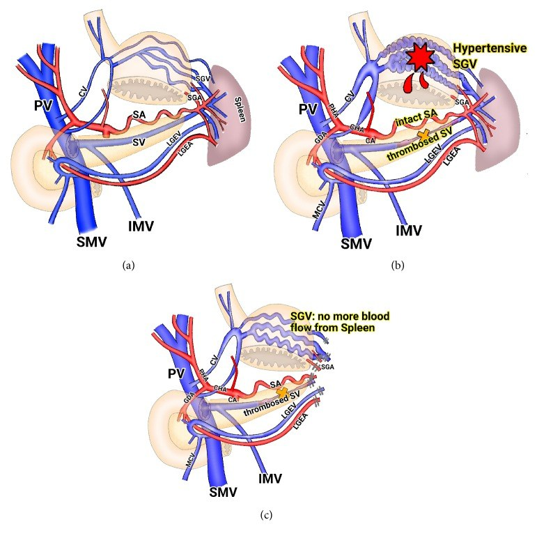
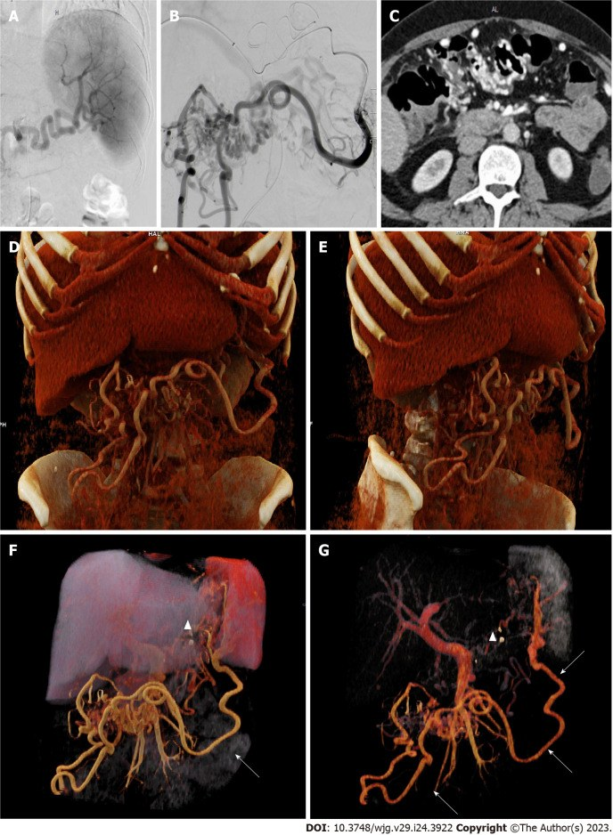
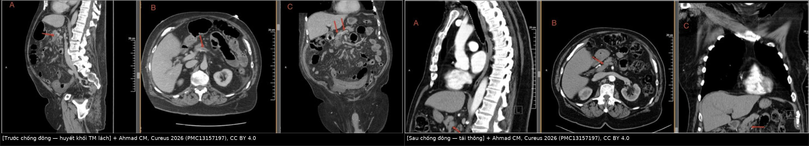
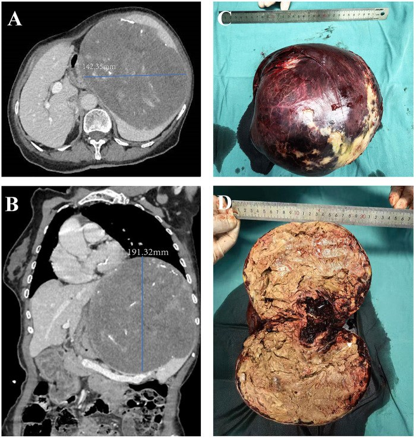
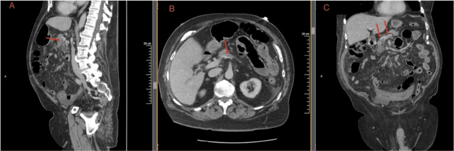
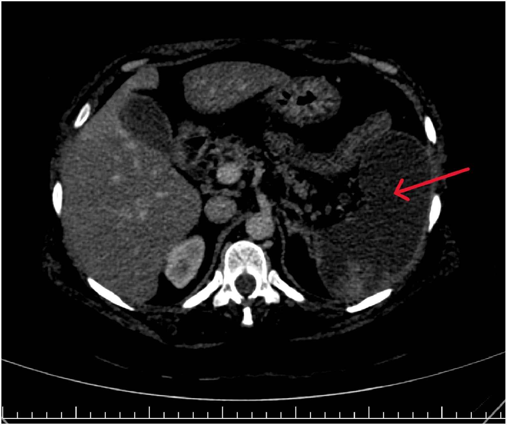
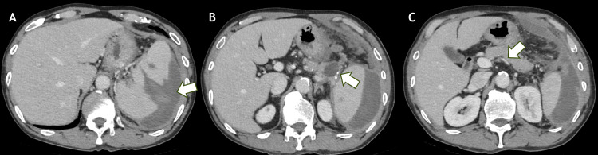

146 — Huyết khối tĩnh mạch lách & nhồi máu lách: tăng áp cửa bên trái, "giả u" và khi nào cắt lách / Splenic vein thrombosis & splenic infarction: sinistral portal hypertension, pseudotumour and when to splenectomise
Tags: pattern:huyet-khoi-mach pattern:nhoi-mau-tang vung:lach vung:tuy protocol:CT-bung-da-thi
Mức chắc chắn (certainty): tổng hợp y văn (literature synthesis) — tự biên từ y văn mở (World J Clin Cases 2022 PMC9372863; Langenbecks Arch Surg 2024 PMC11003905; Thromb J 2026 PMC13613679; Front Med 2026 PMC13590307; Radiol Case Rep 2026 PMC13672812; báo cáo ca Cureus/Front Cardiovasc Med 2026), số liệu lấy nguyên từ bài gốc.
Câu hỏi gốc của bài: bệnh nhân đau thượng vị/lách trái trên nền viêm tụy hoặc không rõ nguyên nhân, CT thấy khuyết thuốc trong tĩnh mạch lách — đó là huyết khối lành sau viêm tụy, huyết khối u do ung thư tụy xâm lấn, huyết khối mủ, hay chỉ là hiện tượng pha trộn dòng chảy? Và khi lách đã nhồi máu (giảm đậm độ hình nêm) thì cắt lách, nút mạch hay chỉ theo dõi? Điểm tựa giải phẫu: tĩnh mạch lách (splenic vein) chạy sau cổ–thân tụy, không có van, đổ vào tĩnh mạch mạc treo trên (SMV) để tạo tĩnh mạch cửa. Vì nằm sát tụy, mọi viêm/hoại tử/nang giả/khối u tụy đều chèn hoặc xâm lấn trực tiếp tĩnh mạch này → huyết khối. Vì lách là tạng có tuần hoàn tận (end-artery) — chỉ một nguồn ĐM lách, gần như không có tuần hoàn bàng hệ trong nhu mô — nên tắc mạch = nhồi máu hình nêm, không có "vùng cứu" như gan.
1. Tổng quan bệnh học – cơ chế hình ảnh
A. Huyết khối tĩnh mạch lách (splenic vein thrombosis – SVT): "bệnh của hàng xóm tụy"
- Cơ chế (tam giác Virchow tại chỗ): (1) tổn thương nội mô do enzym tụy và viêm lan; (2) ứ trệ do tụy to/nang giả/hoại tử chèn ép; (3) tăng đông tại chỗ do cytokine và yếu tố mô từ tụy hoại tử (PMC9372863).
- TẠI SAO hình ảnh là "khuyết thuốc": huyết khối là khối mô không có lòng mạch → không ngấm thuốc ở thì tĩnh mạch cửa (60–70 giây), nằm trong lòng mạch vẫn ngấm thuốc ở thành. Huyết khối cấp có thể tăng đậm độ nhẹ trên phim không cản quang (hemoglobin cô đặc) — vì vậy thu hẹp cửa sổ (narrow window) giúp nhận diện trên CT không cản quang, nhưng không có ngưỡng HU nào đủ tin để chốt (PMC12078030).
- Tần suất – ngưỡng định lượng: SVT gặp ở ~50% viêm tụy hoại tử, chỉ 1–17% khi không có hoại tử (PMC9372863); ở viêm tụy mạn, 19,8% (37/187) có SVT (PMC6482754).
- Hậu quả 1 — tăng áp cửa bên trái (sinistral/left-sided portal hypertension): máu lách không ra được theo TM lách → đi tĩnh mạch vị ngắn (short gastric veins) và vị mạc nối trái → giãn tĩnh mạch dạ dày đáy vị. Vì tĩnh mạch vành vị (left gastric vein) vẫn đổ về cửa, giãn TM thực quản thường KHÔNG có; chức năng gan bình thường, không báng. Đây là lý do "giãn TM dạ dày đơn độc + lách to + gan lành" phải đi tìm SVT.
- Hậu quả 2 — chảy máu: trong nhóm SVT do viêm tụy mạn, 18,9% có chảy máu tiêu hóa có ý nghĩa lâm sàng; nguồn giãn TM dạ dày 8,1% (PMC6482754). Trong nhóm SVT đơn độc hiện đại (98 ca), chảy máu do giãn TM chỉ 3% (3/98) — thấp hơn nhiều so với nỗi lo truyền thống (PMC11003905).
- Hậu quả 3 — lan tới tĩnh mạch cửa/mạc treo: huyết khối lan ngược dòng → huyết khối cửa (khi đó là bệnh cảnh khác, xem bài 163/124); tiến triển này không giảm khi dùng chống đông trong nghiên cứu 98 ca (p = 0,1495, OR 3,39; KTC 0,895–12,87) (PMC11003905).

(a) Bình thường: máu lách → TM lách → TM cửa. (b) TM lách tắc: máu đi qua tĩnh mạch vị ngắn (SGV) → giãn TM dạ dày. (c) Sau khi cắt lách: SGV không còn nhận máu lách. Nguồn: Kim HJ, Case Rep Med 2016 (PMC5116513) Fig. 5, CC BY 4.0.B. Nhồi máu lách (splenic infarction): "ổ giảm đậm độ hình nêm"
- Cơ chế: tắc ĐM lách hoặc nhánh (thuyên tắc tim–ĐM chủ, bệnh tăng sinh tủy, xơ vữa, viêm mạch) hoặc tắc tĩnh mạch lách gây ứ huyết → thiếu máu nhu mô. Vì mạch tận, vùng thiếu máu không ngấm thuốc và có đáy quay ra vỏ lách (hình nêm — wedge), đỉnh quay về rốn lách.
- TẠI SAO giảm đậm độ: mô hoại tử mất tưới máu → không có iod cản quang; ở giai đoạn muộn, mô xơ/hoại tử hóa lỏng → đậm độ càng thấp. Ca nhồi máu gần toàn bộ có ROI ~13 HU trong vùng hóa lỏng, phù hợp hoại tử dịch hóa (PMC13672812).
- Số liệu chuẩn (67 ca, 2014–2023): tuổi trung bình 50,9 ± 16,3, nam 64,2%; đau bụng 100%, sốt 40,3%, lách to 80,6%; CT có cản quang chẩn đoán 100%, trong khi siêu âm chỉ 29,9% (PMC13613679). Căn nguyên: huyết học 31,3% (AML/CML/myelofibrosis/PV/MDS/PNH/SCD), tim mạch 11,9% (rung nhĩ, suy tim, hẹp ĐMC), bệnh hệ thống khác 32,8%, không rõ 23,9%; JAK2 dương 4/16 ca được xét nghiệm (PMC13613679).
- Điều trị – kết cục: 89,6% chỉ điều trị nội khoa, 10,4% phải cắt lách (vỡ lách, nhồi máu xuất huyết, áp-xe hóa lách), tử vong trong viện 6,0% — đều ở bệnh nền nặng (ung thư/nhiễm khuẩn huyết) (PMC13613679).
- Nhồi máu lách "do thầy thuốc": sau tiêm keo nội soi cầm máu giãn TM dạ dày, 8,7% (16/183) có nhồi máu lách trên CT, 93,8% xử trí bảo tồn (PMC13590307). Đây là nguyên nhân hay bị bỏ qua khi đọc CT kiểm tra sau thủ thuật.
2. Mẫu hình + chẩn đoán phân biệt theo vị trí (gamut)
Mẫu hình 1 — "khuyết thuốc trong lòng tĩnh mạch lách" (filling defect):
- Huyết khối lành sau viêm tụy (thường gặp nhất; tụy hoại tử/nang giả kèm theo).
- Huyết khối mủ (septic thrombophlebitis) — sốt, cấy dương, ổ nhiễm lân cận.
- Huyết khối u (tumour thrombus) — ung thư tụy thân/đuôi xâm lấn, u thần kinh nội tiết tụy, RCC di căn; mạch giãn to và trong lòng có mô ngấm thuốc.
- Chèn ép/ly giải sau mổ — huyết khối "mõm cụt" sau cắt tụy đuôi + cắt lách là bình thường, không phải bệnh lý.
- Huyết khối do tăng đông — MPN (JAK2/CALR), ung thư, thai kỳ, thuốc tránh thai; thường kèm huyết khối ở chỗ khác.
- Giả khuyết thuốc do pha trộn dòng chảy tại chỗ đổ TM lách–SMV (flow mixing artifact).
Mẫu hình 2 — "ổ giảm đậm độ hình nêm trong lách":
- Nhồi máu lách (thuyên tắc tim/ĐM chủ, MPN, SCD, viêm mạch, sau nút mạch, sau tiêm keo).
- Rách lách (laceration) — có chấn thương, đường rách không theo phân thùy, kèm máu tụ dưới bao/quanh lách.
- Áp-xe lách — ổ dịch có khí, thành ngấm thuốc, sốt cao; hiếm khi khí trong nhồi máu vô khuẩn.
- U/lách phụ, nang lách, lympho — không theo hình nêm, bờ tròn.
- Bất thường tưới máu thì sớm (mottled/tiger-stripe) — biến thể bình thường, mất ở thì tĩnh mạch cửa.
Mẫu hình 3 — "giãn TM dạ dày + lách to + gan lành":
- SVT (nguyên nhân hàng đầu của tăng áp cửa bên trái).
- Tăng áp cửa không xơ gan khác (PSVD, sán máng, Caroli — bài 149/166).
- Huyết khối cửa/mạc treo (bài 163) — khi đó giãn TM thực quản cũng có.
- U/giãn mạch dạ dày, giãn tĩnh mạch do tắc TM lách sau mổ.
Mnemonic cho "khuyết thuốc mạch lách" — SPLEEN: Septicaemia/viêm tụy, Pancreatic tumour (u tụy), Ligation/post-op (mõm cụt), Endothelial/thrombophilia (MPN, thai), Extrinsic compression (nang giả, khối), No-flow artifact (pha trộn dòng).

(A–C) Chụp mạch và CT; (D–G) dựng 3D cho thấy mạng bàng hệ lớn quanh dạ dày/lách khi tĩnh mạch lách tắc — tương ứng "tăng áp cửa bên trái" trên hình ảnh. Nguồn: Füssel LM, World J Gastroenterol 2023 (PMC10324528) Fig. 2, CC BY-NC 4.0 (giữ nguyên bản).3. Bảng so sánh phân biệt (ma trận đối chiếu)
| Thực thể (entity) | Hình ảnh điển hình (US/CT/MRI theo thì) | Chốt vào (rule-in) | Chốt loại (rule-out) | Gợi ý xác nhận |
|---|---|---|---|---|
| SVT lành sau viêm tụy | Khuyết thuốc trong TM lách, mạch không giãn, tụy hoại tử/nang giả cạnh đó; bàng hệ vị ngắn | Bối cảnh viêm tụy + khuyết thuốc + tụy bệnh lý liền kề; tái thông sau chống đông 46% | Mạch giãn > 2 lần + mô ngấm trong lòng → nghĩ huyết khối u | CT 3 thì + coronal dọc TM lách; Doppler; theo dõi 3–6 tháng |
| Huyết khối u (PDAC thân/đuôi) | TM lách giãn, lòng có mô ngấm thuốc, khối tụy xâm lấn, hạch, teo tụy xa | Mô trong lòng ngấm thuốc + khối tụy + hạch | Khuyết thuốc không ngấm, mạch không giãn → lành | EUS–FNA, CA 19-9, PET/CT |
| Huyết khối cửa–mạc treo (MVT) | Khuyết thuốc SMV/TM cửa, phù mạc treo "lược", dày thành ruột | Đau bụng + phù mạc treo + khuyết thuốc SMV | Chỉ TM lách, tụy bình thường → SVT đơn độc | CTA; xem bài 163 |
| Nhồi máu lách do thuyên tắc | Nêm giảm đậm độ, đáy ở vỏ, không ngấm, có thể nhiều ổ; lách không to nhiều | Nêm + đáy vỏ + bệnh nguồn thuyên tắc (rung nhĩ, van tim) | Bờ tròn, có khí, thành ngấm → áp-xe/u | CECT thì TM cửa; siêu âm tim; US chỉ 29,9% |
| Nhồi máu lách do MPN | Lách rất to, nhồi máu nhiều ổ/tái phát, có ổ nhồi máu cũ | Lách to + huyết khối tạng + JAK2/CALR | Lách bình thường, một ổ đơn độc → nghĩ nguồn tim | CT 3 thì, JAK2 V617F, tủy đồ |
| Rách lách | Đường giảm đậm độ không theo phân thùy, máu tụ dưới bao/quanh lách, chấn thương | Máu tụ quanh lách + đường rách + tiền sử chấn thương | Không máu tụ, bờ nêm đều → nhồi máu | CECT; xem bài 140 (AAST) |
| Nhồi máu lách mạn "giả u" | Khối giảm đậm độ lớn, co kéo vỏ, vôi hóa, không ngấm, không to thêm | Không ngấm + kích thước ổn định + bệnh tim nguồn | Ngấm thuốc + to lên → u thật | So phim cũ nhiều năm; tránh sinh thiết |
| Áp-xe lách | Ổ dịch có khí, thành dày ngấm, nhiều ổ nhỏ; sốt cao, đau | Khí trong ổ + thành ngấm + sốt | Không khí, bờ nêm, không thành → nhồi máu | Siêu âm, cấy máu, dẫn lưu |
| Vỡ lách tự phát sau SVT | Máu tụ quanh lách + dịch ổ bụng, lách vỡ, SVT | SVT + máu tụ + Hb tụt không chấn thương | Máu tụ sau chấn thương → rách lách | CTA; cắt lách cấp cứu |

Trái: khuyết thuốc trong tĩnh mạch (mũi tên đỏ) trước điều trị. Phải: kiểm tra sau chống đông — huyết khối tiêu biến/tái thông. Nguồn: Ahmad CM, Cureus 2026 (PMC13157197), CC BY 4.0. Ảnh ghép letterbox, giữ nguyên tỷ lệ.Hai dấu hiệu quyết định "thái độ" (đọc chuẩn xác)
- Sign 1 — mạch có giãn hay không: huyết khối lành thường nằm trong mạch kích thước bình thường; huyết khối u làm mạch giãn vì mô u phát triển trong lòng. Đo đường kính TM lách trên coronal, so với tĩnh mạch cửa.
- Sign 2 — có "mô trong lòng" ngấm thuốc không: huyết khối lành không ngấm ở mọi thì; huyết khối u ngấm (thì ĐM hoặc thì cửa) và có thể thấy nhánh mạch nuôi vào trong khối.
- Bẫy "tái thông một phần": sau chống đông, lòng mạch có thể ngấm không đều do dòng chảy quanh huyết khối còn lại — đừng gọi là huyết khối u. So sánh với phim trước và dùng coronal reformat.
4. Protocol chụp + phân độ & thuật toán xử trí
Protocol (bắt buộc đủ thì):
- CT bụng–chậu 3 thì: không cản quang → ĐM 35–40 giây → tĩnh mạch cửa 65–70 giây; lát ≤ 1–2,5 mm, tái tạo coronal/oblique dọc trục tĩnh mạch lách–cửa (curved planar). Vì huyết khối cấp có thể tăng đậm độ trên phim không cản quang, cần cửa sổ hẹp để không bỏ sót (PMC12078030).
- Siêu âm Doppler: rẻ, không xạ, nhưng độ nhạy thấp với TM lách do vị trí sau tụy (độ nhạy ~83% với TM cửa) — không dùng để loại trừ (PMC9372863).
- MRI: khi cần phân biệt huyết khối u và huyết khối lành (T1/T2, DWI, gadolinium động học); MRCP nếu nghi tổn thương đường mật kèm.
- Nếu có giãn TM dạ dày: nội soi để phân độ và đánh giá nguy cơ chảy máu; không nội soi cầm máu đơn thuần rồi bỏ theo dõi.
- Theo dõi: CT tĩnh mạch cửa lặp lại 3–6 tháng sau chẩn đoán (đánh giá tái thông và bàng hệ) — mốc dùng trong nghiên cứu 98 ca (thời gian chống đông trung bình ~5 tháng) (PMC11003905).
Phân độ thực hành (không có RADS cho lách — dùng 2 trục):
| Trục | Mức | Ý nghĩa xử trí |
|---|---|---|
| Mức tắc mạch | SVT đơn độc / SVT + giãn TM dạ dày / lan tới TM cửa–SMV | lan tới cửa–SMV = bệnh cảnh nặng hơn, cân nhắc chống đông tích cực |
| Mức nhồi máu lách | < 30%** thể tích (khu trú) / **30–50%** / **> 50% hoặc gần toàn bộ | < 30%: bảo tồn; > 50% + đau nhiều/sốt: theo dõi sát, cân nhắc can thiệp; vỡ/áp-xe hóa → cắt lách |
flowchart TD
A[CT có huyết khối TM lách] --> B{Có viêm tụy hoại tử<br/>hoặc nang giả cạnh đó?}
B -->|Có| C[Huyết khối lành sau viêm tụy]
B -->|Không| D{Có khối tụy/u,<br/>mạch giãn, mô ngấm trong lòng?}
D -->|Có| E[Huyết khối u - EUS/FNA, PET-CT]
D -->|Không| F{Tăng đông: JAK2/CALR,<br/>ung thư, thai, thuốc?}
F -->|Có| G[Điều trị nguyên nhân + chống đông]
F -->|Không| C
C --> H{Có giãn TM dạ dày<br/>hoặc lan tới TM cửa?}
H -->|Không| I[Theo dõi + CT lại 3-6 tháng]
H -->|Có| J[Chống đông 3-6 tháng<br/>+ nội soi đánh giá]
J --> K{Chảy máu tái diễn<br/>hoặc tái thông thất bại?}
K -->|Không| L[Tiếp tục theo dõi]
K -->|Có| M[Cắt lách hoặc nút ĐM lách<br/>khi mổ khó]
Ngưỡng xử trí (bằng chứng hiện có):
- Chống đông: nhóm có chống đông tái thông 46% so với 15% (p = 0,0008; OR 4,7; KTC 1,775–11,72), bàng hệ ít hơn (OR 0,4; KTC 0,174–0,929), không tăng chảy máu (5% vs 2%, p = 0,695) và không ca nào phải cắt lách (PMC11003905). Tuy vậy tử vong không khác và huyết khối lan tới TM cửa không giảm → chống đông không phải "chân lý cho mọi ca"; hội đồng nên quyết định theo nguy cơ chảy máu + mức lan.
- Cắt lách: chỉ định chắc chắn khi chảy máu do giãn TM dạ dày tái diễn hoặc nhồi máu/vỡ/áp-xe lách không kiểm soát; đây vẫn là điều trị triệt để của tăng áp cửa bên trái (PMC5116513, PMC13613679).
- Nút ĐM lách (SAE): lựa chọn thay thế khi mổ khó (đã mổ Whipple, dính nhiều, bàng hệ phức tạp) — giảm kích thước giãn TM và cầm máu, chấp nhận nhồi máu lách một phần (PMC11481824, PMC5116513).
5. Biến thể bình thường và cạm bẫy
- Rãnh/phân thùy lách (splenic cleft/lobulation): đường giảm đậm độ mảnh, bờ nhẵn, chạy từ vỏ vào, không có máu tụ, không thấy ở thì ĐM→cửa khác biệt — khác rách lách (bờ nham nhở, máu tụ, chấn thương).
- Tưới máu không đều thì ĐM (mottled enhancement): lách ngấm dạng vằn/da hổ ở thì ĐM, đồng nhất ở thì cửa — không được gọi nhồi máu nếu chỉ có một thì. Luôn đọc thì tĩnh mạch cửa.
- Lách phụ (accessory spleen) & splenosis: nốt cùng đậm độ lách, ở rốn lách/đuôi tụy/mạc treo — đừng gọi u tụy hay hạch.
- "Mõm cụt" sau cắt tụy đuôi–cắt lách: huyết khối/nút thắt TM lách là hệ quả phẫu thuật, không phải huyết khối mới; đọc kỹ tiền sử.
- Pha trộn dòng chảy tại chỗ đổ TM lách–SMV: khuyết "giả" thay đổi giữa các thì/lát cắt; dùng lát mỏng + coronal + thì cửa muộn.
- Nhồi máu lách mạn giả u: ca 48 tuổi có khối 142 × 191 mm, giảm đậm độ, co kéo, không ngấm, không to thêm trong nhiều năm; chẩn đoán cuối là nhồi máu lách mạn (PMC13433350) — cấm sinh thiết mù vì nguy cơ chảy máu và chẩn đoán sai.

Khối lớn giảm đậm độ, co kéo vỏ, không ngấm thuốc; bệnh nhân có bệnh van tim — nguồn thuyên tắc. Nguồn: Tian W, Front Cardiovasc Med 2026 (PMC13433350), CC BY 4.0 (ảnh gốc có cả bệnh phẩm C–D; giữ nguyên bản).- Cạm bẫy "nhồi máu = áp-xe": sốt + nhồi máu lách có thể bị chẩn đoán áp-xe và chọc hút/dẫn lưu oan. Chốt: khí trong ổ + thành ngấm + dịch mủ mới là áp-xe; nhồi máu vô khuẩn không có khí (khí hiếm, gặp khi nhiễm khuẩn hóa).
- Cạm bẫy "đã có SVT thì phải cắt lách": sai. Đa số không chảy máu (3% trong 98 ca) và không cần cắt lách (PMC11003905).
- Bắt buộc tìm bệnh nền của nhồi máu lách: rung nhĩ/van tim, MPN (JAK2), SCD, viêm mạch, COVID-19/nhiễm khuẩn — nhồi máu lách là dấu hiệu của bệnh toàn thân, không phải chẩn đoán cuối.
6. Tự lượng giá — Blind Quiz ngay trên trang tĩnh
Ca 1 — Nam 40 tuổi, đau thượng vị kéo dài, tiền sử viêm tụy. CT bụng có cản quang.

- Gợi ý lâm sàng: đau bụng, không sốt, không chảy máu.
- Câu hỏi: Dấu hiệu chính nằm ở mạch nào? Ba chẩn đoán phân biệt? Dấu hiệu nào phân biệt huyết khối lành với huyết khối u?
Bấm để hiện đáp án (findings + chẩn đoán)
- Dấu hiệu: khuyết thuốc trong lòng tĩnh mạch mạc treo trên/tĩnh mạch lách (mũi tên đỏ), thành mạch còn ngấm; không thấy mô ngấm trong lòng, mạch không giãn.
- Chẩn đoán: huyết khối tĩnh mạch tạng (SVT/SMV) lành tính — nên tìm yếu tố tăng đông (bệnh nhân ca gốc mang đột biến prothrombin G20210A). Điều trị: chống đông, kiểm tra lại sau 3–6 tháng.
- Chốt phân biệt: huyết khối u = mạch giãn + mô ngấm trong lòng + khối tụy; huyết khối mủ = sốt + ổ nhiễm + khí trong lòng.
- Nguồn ảnh: Ahmad CM, Cureus 2026 (PMC13157197) Fig. 1, CC BY 4.0.
Ca 2 — Nữ 63 tuổi, đau hạ sườn trái, sốt nhẹ. CT có cản quang thì tĩnh mạch cửa.

- Câu hỏi: Mô tả tổn thương? Vì sao không ngấm thuốc? Cần tìm gì trên lâm sàng và xử trí ra sao?
Bấm để hiện đáp án (findings + chẩn đoán)
- Dấu hiệu: gần toàn bộ nhu mô lách giảm đậm độ, không ngấm thuốc (mũi tên đỏ), chỉ còn mảnh nhu mô ngấm ở cực trên; ROI trong vùng tổn thương ~13 HU (hoại tử dịch hóa).
- Chẩn đoán: nhồi máu lách gần toàn bộ do huyết khối ĐM lách + TM lách — nguyên nhân phải tìm: rung nhĩ/van tim, MPN (JAK2), bệnh tăng đông.
- Xử trí: bảo tồn nếu không vỡ/không áp-xe (89,6% ca trong 67 ca); cắt lách khi vỡ, nhồi máu xuất huyết, áp-xe hóa (10,4%).
- Nguồn ảnh: Nalla S, Radiol Case Rep 2026 (PMC13672812) Fig. 1, CC BY-NC-ND 4.0 (giữ nguyên bản).
Ca 3 — Nam 45 tuổi, đau hạ sườn trái đột ngột, Hb giảm, không chấn thương.

- Câu hỏi: Vì sao "không chấn thương" mà lách vỡ? Dấu hiệu nào trên ảnh C?
Bấm để hiện đáp án (findings + chẩn đoán)
- Dấu hiệu: đường rách nhu mô + máu tụ dưới bao/quanh lách (mũi tên trắng ở A, B); ảnh C có khuyết thuốc trong tĩnh mạch lách (mũi tên).
- Chẩn đoán: vỡ lách tự phát trên nền huyết khối tĩnh mạch lách do viêm tụy mạn — ứ huyết + nhồi máu làm nhu mô yếu, vỡ không cần chấn thương.
- Chốt: SVT + máu tụ + Hb tụt = chỉ định CTA và cắt lách cấp cứu, không chờ.
- Nguồn ảnh: Takenaka R, Cureus 2026 (PMC13087994) Fig. 1, CC BY 4.0.
Bài liên quan chéo
- 100 – Tổng quan hệ Bụng
- 135 – Viêm tụy cấp Atlanta 2012 & Balthazar (nguyên nhân hàng đầu của SVT)
- 163 – Pylephlebitis & huyết khối tĩnh mạch mạc treo (MVT) (khi huyết khối lan vào hệ cửa)
- 140 – Lách & chấn thương tạng đặc: AAST + thoát thuốc (rách lách vs nhồi máu)
- 149 – Tăng áp cửa KHÔNG do xơ gan (chẩn đoán phân biệt của tăng áp cửa bên trái)
- 176 – TIPS/DIPS: theo dõi shunt (giãn TM dạ dày và can thiệp)
- 147 – Sốt kéo dài (FUO) & ổ nhiễm ẩn trong bụng (nhồi máu lách + sốt)
Không dùng để chẩn đoán độc lập khi chưa có người hướng dẫn.